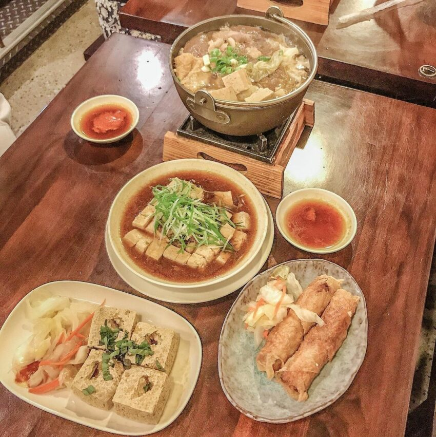

說到台灣的獨特香氣，第一個想到的就是臭豆腐！這間福記臭豆腐可是高雄的排隊名店
必點的脆皮臭豆腐外酥內嫩，吸附滿滿醬汁，搭配酸甜泡菜消除油膩
還有另一個招牌是豆腐捲，炸到金黃微酥的腐皮，內餡放入臭豆腐、洋蔥和玉米等配料
喜歡臭香滋味的人絕對不會失望！
地址：高雄市苓雅區海邊路53巷52號
營業時間：14:30–21:30

高雄美食介紹 高雄美食｜早餐、早午餐 高雄美食｜下午茶、咖啡廳 高雄美食｜消夜、宵夜 期末心得
練習用音樂、影片
your drowser does not support the audio element.